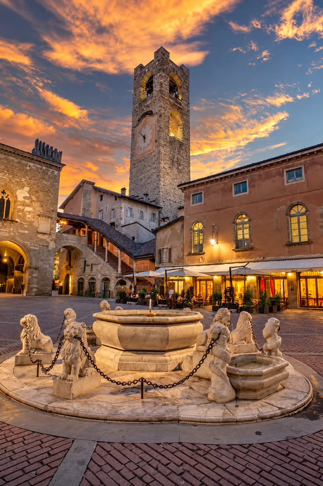
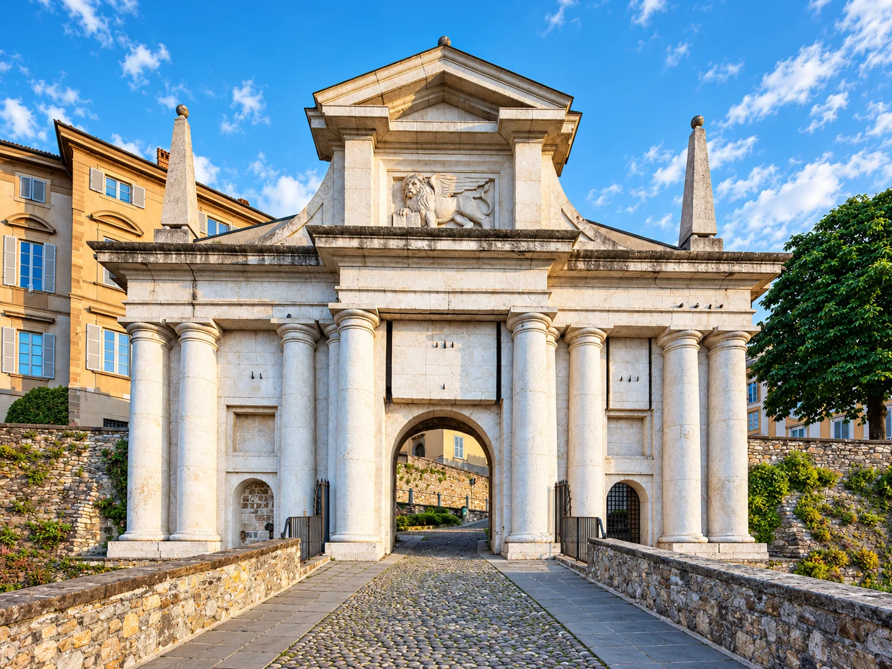
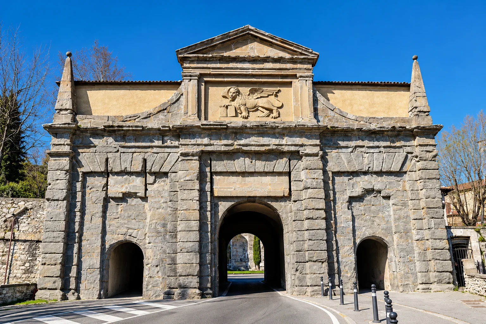

SCHEDA 01 / PIETRE DELLA BERGAMASCA
Le pietre di Bergamo Città Alta
Una lettura geo-architettonica della città storica
Il costruito di Bergamo Città Alta conserva un repertorio di pietre sedimentarie e ornamentali provenienti dalle Prealpi lombarde e, in alcuni casi, da territori più lontani. Le arenarie cretaciche affioranti sui colli bergamaschi hanno fornito materiali da costruzione per murature ed edifici storici; alle arenarie si affiancano calcari, dolomie, brecce ornamentali e rocce evaporitiche selezionate per specifiche applicazioni.
Materiali e principali impieghi
Lo studio presentato da Vola, Fiora e Alciati al MAEGS-16 (2009) documenta, tra gli altri, l’impiego dell’Arenaria di Sarnico, della dolomia di Zandobbio e dell’Arabescato Orobico. Piazza Vecchia, le porte monumentali, le basiliche e la Cappella Colleoni costituiscono contesti di particolare interesse per il riconoscimento dei litotipi. Il poster sulla Volpinite (2010) documenta inoltre elementi architettonici in anidrite nella Basilica di Santa Maria Maggiore e nella Cappella Colleoni.
Metodo e limiti delle attribuzioni
Il riconoscimento petrografico si fonda sul confronto tra osservazioni macroscopiche, tessiture, caratteri mineralogici, fonti storiche e materiali di cava. Per gli elementi decorativi complessi, una veduta generale non è sufficiente a identificare in modo definitivo la pietra utilizzata: le attribuzioni devono riferirsi a elementi precisi e a confronti documentati.
Consulta la bibliografia scientifica →
Poster scientifico · Pisa, 2010: Vola, Alciati, Di Majo & Fiora, Geo-petrographic and lito-applicative characterization of the Volpinite (Bardiglio of Bergamo “marble”), from lower Val Camonica. Studio della pietra evaporitica impiegata anche nelle architetture storiche bergamasche. Visualizza / scarica PDF ↗
Riferimenti bibliografici essenziali
- Vola, Fiora & Alciati (2009), Stones used in Bergamo architecture, MAEGS-16. Scheda bibliografica ↗ · Poster originale (PDF) ↗
- Vola (2009), Pietre della Bergamasca. Anche il marmo di Zandobbio conquista il marchio di origine. Scheda bibliografica ↗

